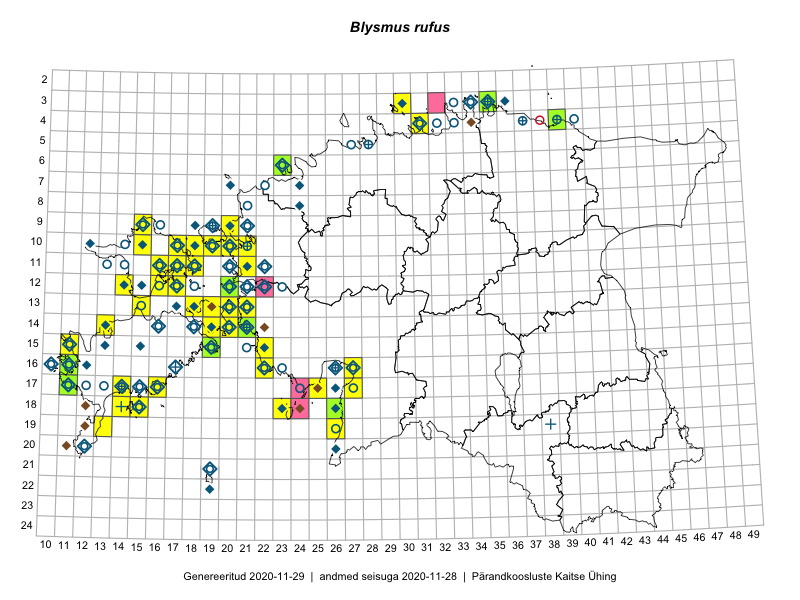

Blysmus rufus
Uuendatud: 2016-12-02
Kaardile koondatud taksonid: Blysmus rufus (Huds.) Link

Kaart põhineb 37 kirjel, neist vaatlusi 35 ja eksemplare 2. Taksonit on leitud 26 ruudust.
Kuvatud viited 20 esimesele andmebaasikirjele, ülejäänud PlutoFis
- Peedu Saar, Toomas Kukk: 2015-05-28: 11-17: ala
- Peedu Saar, Toomas Kukk: 2015-05-28: 10-15: ala
- Peedu Saar, Toomas Kukk: 2015-05-27: 09-15: ala
- Toomas Kukk, Eerik Leibak: 2015-08-12: 10-17: ala
- Toomas Kukk, Eerik Leibak: 2015-08-11: 09-15: ala
- Toomas Kukk: 2014-06-18: 18-14: ala
- Meeli Mesipuu: 2015-07-13: 13-20: ala
- Eeva-Maria Jeletsky, Tarmo Niitla: 2015-06-17: 11-18: ala
- Ott Luuk, Toivo Sepp: 2015-08-20: 11-29: ala
- Oliver Parrest: 2015-07-01: 19-13: ala
- Meeli Mesipuu: 2015-06-20: 14-19: ala
- Meeli Mesipuu, Kadri Tali: 2015-06-26: 14-20: ala
- Mari Reitalu, Oliver Parrest: 2015-07-24: 14-13: ala
- Mari Reitalu, Sirje Azarov: 2015-05-16: 15-19: ala
- Triin Reitalu, Mari Reitalu: 2015-08-09: 16-11: ala
- Kadri Tali: 2015-06-03: 13-19: ala
- Mari Reitalu, Triin Reitalu: 2015-08-09: 16-11: ala
- Toomas Kukk, Peedu Saar: 2016-05-12: 10-19: ala
- Toomas Kukk, Peedu Saar: 2016-05-12: 10-20: ala
- Toomas Kukk, Peedu Saar: 2016-05-14: 16-22: ala